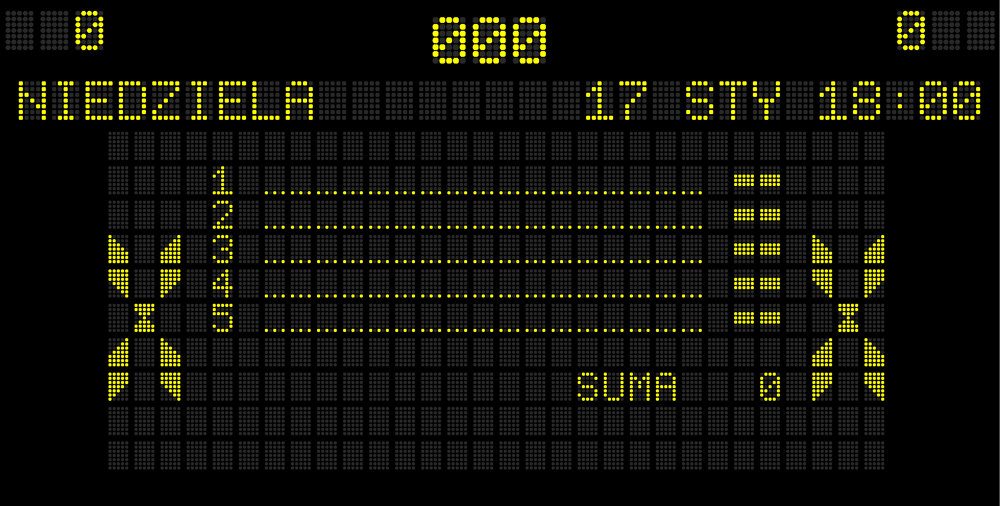
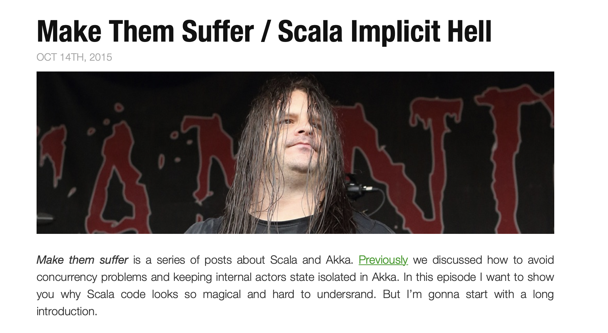

Fantastic Frameworks
...and How to Avoid Them
Fantastic Frameworks
...and How/Why/If to Avoid Them
Developers Smalltalk?

"What frameworks do you use?" - 100
"Regarding opiniated / unopiniated frameworks, I think they appeal to different types of developers. I now have 20 years of experience. In my first 5-8 years I loved frameworks like Spring. However, as I gained more experience, I felt I needed a framework's "opinion" less and less. Now I avoid them."
https://www.infoq.com/news/2018/10/the-road-to-micronaut-1.0
"Scala programmer confronts Java project that uses Maven, Spring, and Hibernate" - Salvador Dali, oil painting, 1946
https://twitter.com/progpaintings/status/723276501081190400
I. Invasive Frameworks
What's an invasive framework?
II. Magic
What's magic?
- Runtime reflection
- Classpath scanning
- Thread-locals
- Runtime annotation-processing
- Proxies/AOP
"The Meaning of Life", Monty Python
*examples of bold promises from java world*
Meanwhile in Scala ecosystem...
(...) It’s not a web-framework but rather a more general toolkit for providing and consuming HTTP-based services.
https://doc.akka.io/docs/akka-http/current/introduction.html#philosophy

http://spiridonov.pro/2015/10/14/scala-implicit-hell/
Frameworks
- Take time to learn and outdate quickly
- Own you
- Increase complexity/weight/bloat
- Force you to keep up
- Require expert help
- Probably provide more than you need
Frameworks
Take time to learn and outdate quickly
Own you
Increase complexity/weight
Go out of fashion/get abandoned
Force you to keep up
Require expert help
Probably provide more than you need
- Wouldn't you like to focus on solving real problems and let framework authors do the boring parts?
- Of course! but...
"All non-trivial abstractions, to some degree, are leaky."
https://www.joelonsoftware.com/2002/11/11/the-law-of-leaky-abstractions/
for example, ORM
Hibernate
String sql = create
.select(BOOK.TITLE, AUTHOR.FIRST_NAME, AUTHOR.LAST_NAME)
.from(BOOK)
.join(AUTHOR).on(BOOK.AUTHOR_ID.eq(AUTHOR.ID))
.where(BOOK.PUBLISHED_IN.eq(1948))
.getSQL();
import org.springframework.beans.factory.annotation.Autowired;
import org.springframework.stereotype.Component;
@Component
public class FooFacade {
@Autowired
private FooService fooService;
public void foo() {
fooService.foo();
}
}
public static void main(String[] args) {
new FooFacade(); // ???
}
- - Tight coupling with the DI framework
- - Forces weak encapsulation
- - Forces mutability
import org.springframework.beans.factory.annotation.Autowired;
import org.springframework.stereotype.Component;
@Component
public class FooFacade {
private final FooService fooService;
@Autowired
public FooFacade(FooService fooService) {
this.fooService = fooService;
}
public void foo() {
fooService.foo();
}
}
public static void main(String[] args) {
FooFacade fooFacade = new FooFacade(new FooService());
}
- - Tight coupling with the DI framework
- + Can be instantiated independently
- + Internals can be encapsulated
// import org.springframework.beans.factory.annotation.Autowired;
import org.springframework.stereotype.Component;
@Component
public class FooFacade {
private final FooService fooService;
// @Autowired
public FooFacade(FooService fooService) {
this.fooService = fooService;
}
public void foo() {
fooService.foo();
}
}
public static void main(String[] args) {
FooFacade fooFacade = new FooFacade(new FooService());
}
- - Tight coupling with the DI framework
- + Can be instantiated independently
- + Internals can be encapsulated
public class FooFacade {
private final FooService fooService;
public FooFacade(FooService fooService) {
this.fooService = fooService;
}
}
public static void main(String[] args) {
FooFacade fooFacade = new FooFacade(new FooService());
}
- ...but where's the config?
import org.springframework.context.annotation.Bean;
import org.springframework.context.annotation.Configuration;
@Configuration
public class FooConfiguration {
@Bean
FooService fooService() {
return new FooService();
}
@Bean
FooFacade fooFacade(FooService fooService) {
return new FooFacade(fooService);
}
}
- Domain code free of framework configuration
import org.springframework.context.annotation.Bean;
import org.springframework.context.annotation.Configuration;
@Configuration
public class FooConfiguration {
@Bean
FooFacade fooFacade() {
return new FooFacade(new FooService());
}
}
- Domain code free of framework configuration
import org.springframework.beans.factory.annotation.Autowired;
import org.springframework.stereotype.Component;
@Component
public class FooFacade {
@Autowired
private FooService fooService;
public void foo() {
fooService.foo();
}
}
Same framework both invasive and non-invasive
public class FooFacade {
private final FooService fooService;
public FooFacade(FooService fooService) {
this.fooService = fooService;
}
}
import org.springframework.context.annotation.Bean;
import org.springframework.context.annotation.Configuration;
@Configuration
public class FooConfiguration {
@Bean
FooFacade fooFacade() {
return new FooFacade(new FooService());
}
}
Pragmatic Hexagonal/Clean Architecture
Axon RabbitMQ/Kafka Story
import org.axonframework.eventhandling.annotation.EventHandler;
public class SessionEventsHandler {
//...
@EventHandler
public void handle(SessionStartedEvent event) {
// ...
}
@EventHandler
public void handle(SessionEndedEvent event) {
// ...
}
}
@FunctionalInterface
public interface EventHandler {
Map<String, EventRoute> getRoutingConfig();
}
public class SessionEventsHandler implements EventHandler {
// ...
private void playerSessionStarted(SessionStartedEvent event) {
// ...
}
private void playerSessionEnded(SessionEndedEvent event) {
// ...
}
@Override
public Map<String, EventRoute> getRoutingConfig() {
return Map.ofEntries(
route(
SessionEndedEvent.ROUTING_KEY,
SessionEndedEvent.class,
this::playerSessionEnded),
route(
SessionStartedEvent.ROUTING_KEY,
SessionStartedEvent.class,
this::playerSessionStarted)
);
}
}
public class RabbitEventStreamListener implements MessageListener {
// ...
private final Map<String, EventRoute> eventRoutes;
@Override
public void onMessage(Message message) {
var route = eventRoutes.get(message.getMessageProperties().getReceivedRoutingKey());
if (null != route) {
route.getEventHandler().accept(new DomainMessage(...);
} else {
log.warn("couldn't find a matching routing for routing key");
}
}
}
@Configuration
@Profile("kafka-eventstream")
public class KafkaEventStreamConfiguration {
@Bean
public KafkaEventStreamListener kafkaEventStreamListener(
List<EventHandler> handlers, ObjectMapper mapper) {
var eventRoutes = handlers.stream()
.flatMap(h -> h.getRoutingConfig().entrySet().stream())
.collect(
groupingBy(Map.Entry::getKey,
mapping(Map.Entry::getValue, toUnmodifiableSet())));
return new KafkaEventStreamListener(mapper, eventRoutes);
}
}
@Configuration
@Profile("rabbit-eventstream")
public class RabbitEventStreamConfiguration {
@Bean
public Collection<MessageListenerContainer> rabbitEventStreamListener(
@Value("${rabbitmq.axon.exchange}") String axonExchangeName,
@Value("${rabbitmq.axon.queuePrefix}") String axonQueuePrefix,
AmqpAdmin amqpAdmin,
RabbitListenerContainerFactory eventstreamRabbitListenerContainerFactory,
List<EventHandler> handlers,
ConfigurableBeanFactory beanFactory,
ObjectMapper mapper) {
TopicExchange axonExchange = new TopicExchange(axonExchangeName);
amqpAdmin.declareExchange(axonExchange);
return handlers.stream()
.map(handler -> buildRabbitListener(...))
.collect(toUnmodifiableList());
}
private static MessageListenerContainer buildRabbitListener(
EventHandler handler,
ConfigurableBeanFactory beanFactory,
ObjectMapper mapper,
String queuePrefix,
AmqpAdmin amqpAdmin,
TopicExchange axonExchange,
RabbitListenerContainerFactory eventstreamRabbitListenerContainerFactory) { ... }
}
Using common sense is the ultimate Best Practice™.
Nobody cares if it’s your code or the library you used